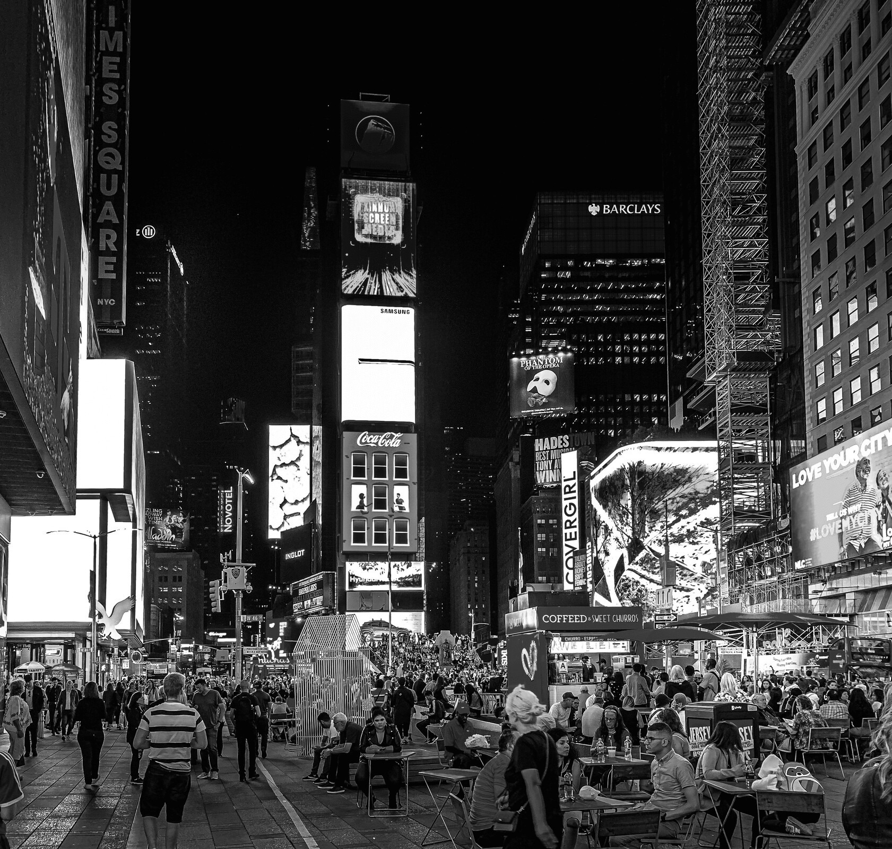

Main Attractions: Times Square
Photo by Andreas M on Unsplash
Times Square is home to everything from street performers and protesters to family-friendly restaurants and attractions. In fact, it's entirely possible to fill an entire vacation in just this one neighborhood!